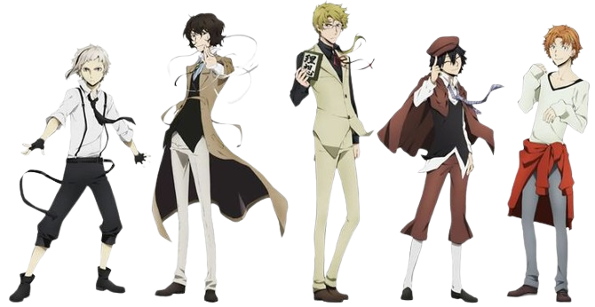

The night is a good time. It's a time that belongs to the Port Mafia.
— Osamu Dazai
<Port Mafia Café> was born out of a love for <Bungo Stray Dogs> and the desire to create a space where fans could immerse themselves in its world while enjoying amazing food.
Founded by <Swagatam Pati>, a devoted anime enthusiast and culinary expert, the café is a testament to the power of combining passion with creativity.
